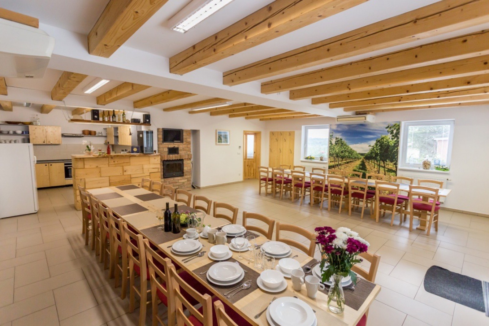

Připravujete soustředění v Tasovicích? Nabízíme kvalitní zázemí pro hráče i realizační tým — s dlouholetou tradicí a dobrými referencemi.

Soustředění a navazující služby koordinujeme s panem Zdeňkem Macháčkem, správcem sportovního areálu v Tasovicích — mach.ll@seznam.cz, tel. 774 693 939.
Cena za osobu a noc včetně zázemí penzionu.
1 400 Kč — při ubytování na tři a více nocí
1 500 Kč — při ubytování na dvě noci
1 200 Kč — při ubytování na tři a více nocí
1 300 Kč — při ubytování na dvě noci
Zavolejte 737 111 321 nebo 737 111 322, případně napište — ozveme se obratem.
Poptat soustředění Zavolat